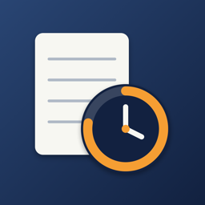

개인정보 처리방침
초근장부(이하 ‘앱’)는 이용자의 개인정보를 수집하지 않습니다.
저장하는 정보
초과근무 기록(시작·종료 시각, 개인용무 시간, 메모)과 설정(직종·계급, 정규 근무시간, 직접 추가한 휴일)은 이용자의 iPhone 안에만 저장됩니다. 위젯에 표시할 이번 달 요약은 같은 개발자의 앱 확장 프로그램이 읽을 수 있도록 기기의 키체인에 저장됩니다. 어떤 정보도 개발자나 제3자의 서버로 전송되지 않습니다.
권한
앱은 위치·연락처·사진 등 기기 권한을 요청하지 않습니다.
백업
이용자가 ‘백업 파일 내보내기’를 선택한 경우에만 기록이 파일로 만들어지며, 그 파일을 어디에 보관할지는 이용자가 정합니다.
광고·분석
광고, 분석 도구, 추적 기능을 사용하지 않습니다.
문의
ppupy1200@gmail.com · 시행일 2026년 10월 6일
English
Choguen does not collect personal data. Overtime records and settings are stored only on your iPhone; a monthly summary for the widgets is kept in the device keychain shared with the app's own widget extension. Nothing is sent to the developer or third parties. The app requests no device permissions and uses no ads, analytics or tracking. Effective October 6, 2026. Contact: ppupy1200@gmail.com